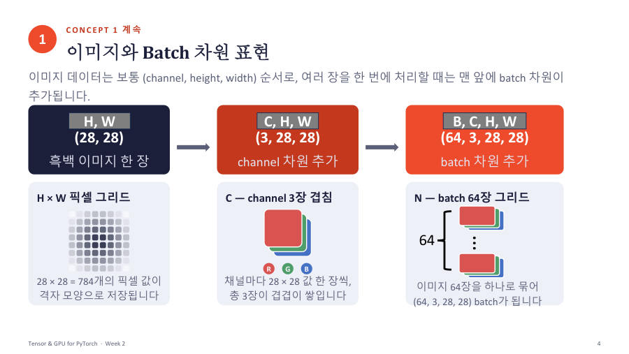

Tensor가 뭐예요 — 차원별 숫자 상자
Tensor(텐서)는 숫자를 저장하는 다차원 배열이에요. "배열"은 숫자를 줄 세운 것이고, "다차원"은 줄이 한 줄이거나, 표(행과 열)이거나, 표가 여러 장 쌓인 것까지 모두 포함한다는 뜻이에요. 교수님은 NumPy의 ndarray, 판다스의 DataFrame, PyTorch의 Tensor가 같은 층위의 개념이라고 했어요. Tensor는 NumPy 배열과 아주 비슷해요.
숫자 하나(시료 무게 한 값)는 0차원이에요. 한 줄(시료 한 개의 측정값 세 항목)은 1차원이에요. 엑셀 시트 한 장(시료 여러 개 × 항목 여러 개)은 2차원이에요. 시트를 여러 장 묶은 통합 문서는 3차원이에요.
| 차원 | 이름 | shape 예시 | 모양 |
|---|---|---|---|
| 0차원 | scalar | () | 숫자 하나 |
| 1차원 | vector | (3,) | 한 줄에 숫자 3개 |
| 2차원 | matrix | (2, 3) | 2행 3열 표 |
| 3차원 이상 | tensor | (2, 3, 4) | 3행 4열 표가 2장 쌓인 입체 (2 × 3 × 4) |
| 코드 줄 | 무슨 뜻 |
|---|---|
torch.tensor(7) | 숫자 7 하나를 Tensor로 만들어요. 괄호가 없으니 0차원이고 shape은 비어 있어요 |
torch.tensor([1, 2, 3]) | 대괄호 한 겹 → 1차원, 원소 3개 → [3] |
torch.tensor([[...], [...]]) | 대괄호 두 겹 → 2차원. 바깥 칸 2개, 안쪽 3개 → [2, 3] |
| 대괄호 세 겹 | 3차원. 바깥부터 2개, 2개, 2개 → [2, 2, 2] |
이미지도 Tensor예요. 이미지 한 장은 (channel, height, width) 순서(색 채널 수, 세로, 가로)이고, 여러 장을 한꺼번에 처리하면 맨 앞에 batch 차원이 붙어서 (batch, channel, height, width), 줄여서 (N, C, H, W)예요. 흑백 28×28이면 (28, 28), 색 채널 3개이면 (3, 28, 28), 이런 이미지 64장이면 (64, 3, 28, 28)이에요.

Tensor는 숫자를 저장하는 다차원 배열이며 0차원은 scalar, 1차원은 vector, 2차원은 matrix, 3차원 이상은 tensor라고 부른다. 이미지 batch의 shape은 (N, C, H, W) 순서이다. shape을 볼 때는 "대괄호가 몇 겹인지"가 차원 수예요.
잠깐 확인 — 흑백 28×28 이미지 32장을 묶은 batch의 shape은?
(32, 1, 28, 28)이에요. 순서는 (장 수, 채널, 세로, 가로)이고 흑백이라 채널은 1이에요.
자료: 2주차 · Week02_Tensor_and_GPU(pdf, 풀이포함 ipynb) · 빅분02(2주차) 녹취